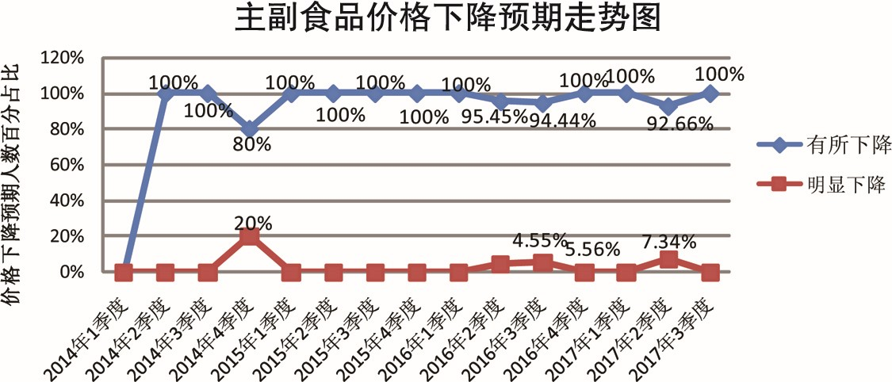

2017年三季度居民消费价格预期调查报告
参加2017年三季度居民消费价格预期调查的专家及相关专业人士334人，收回有效问卷334份，其中绝大多数人继续保持居民消费价格总水平和主副食品价格稳中缓升的预期，与上期相比，居民消费价格总水平上涨预期继续回落，主副食品价格上涨预期保持不变，且不到半数；看平预期小幅上升。与去年同期相比，居民消费价格总水平和主副食品价格上涨预期大幅下降，看平预期大幅上升。三季度商品房总体价格预期继续以稳中缓升为主，南京、苏州等热点城市商品房价格趋于平稳，省内其他城市商品房价格，与上期以缓涨预期为主相比，本期明显上涨预期迅速上升，需引起地方政府高度重视，切实加强调控和管理。
一、居民消费价格总水平预期继续以稳中缓升为主
与二季度相比，预计三季度居民消费价格总水平上涨163人，占比48.8%，其中预计缓和上涨153人，明显上涨10人，分别占93.87%、6.13%；预计基本持平144人，占比43.11%；预计有所下降26人，占比7.79%；不能确定1人，占比0.3%；无人预计明显下降。
调查结果显示，预计居民消费价格总水平上涨的人数减少至不到半数，其中超过九成的人预计缓和上涨；预计基本持平的人数超过四成，接近上涨预期。绝大多数人预计三季度居民消费价格总水平稳中缓升。
从居民消费价格总水平预期走势看，三季度（本期）居民消费价格总水平上涨预期较上期有所回落，比上期的54.08%减少了5.28个百分点；与去年同期的60%相比，本期上涨预期减少11.2个百分点。
与上期37.46%的人预计居民消费价格总水平基本持平相比，本期增加了5.65个百分点；与去年同期的34.17%相比，本期增加8.94个百分点。
本期下降预期仍保持低位占比，与上期8.16%的人预计居民消费价格总水平下降相比，本期略减0.37个百分点；与去年同期的4.58%相比，本期增加3.21个百分点。
调查表明，与上期相比，本期绝大多数人继续保持居民消费价格总水平稳中缓升的预期，其中，看涨人数继续减少，虽仍高于看平人数，但首次下降至不到半数。与去年同期六成的人预计居民消费价格总水平上涨相比，本期上涨预期大幅下降，看平预期大幅上升。
二、主副食品价格以平稳预期为主
与二季度相比，预计三季度主副食品价格上涨131人，占比39.22%，其中预计缓和上涨123人，明显上涨8人，分别占93.88%、6.12%；预计基本持平164人，占比49.10%；预计有所下降39人，占比11.68%；无人预计明显下降。
调查结果显示，预计主副食品价格上涨的人数约四成，其中超过九成的人预计缓和上涨；预计主副食品价格平稳的人数约五成，高于预计价格上涨人数十个百分点。绝大部分的人预计主副食品价格稳中缓升，并以平稳为主。

从主副食品价格预期走势看，与上期39.88%的人预计主副食品价格上涨相比，本期基本不变，仅减少0.66个百分点；与去年同期的64.58%相比，本期减少25.36个百分点。
与上期47.73%的人预计主副食品价格基本持平相比，本期略增1.37个百分点；与去年同期的27.92%相比，本期增加21.18个百分点。
与上期12.39%的人预计主副食品价格下降相比，本期略降0.71个百分点；与去年同期的7.50%相比，本期增加4.18个百分点。
调查表明，与上期相比，本期主副食品价格预期基本保持不变，绝大多数人预计主副食品价格稳中缓升，并以平稳为主。与去年同期超过六成的人预计主副食品价格上涨相比，本期上涨预期大幅下降，看平预期大幅上升。
关于大米、食用油和猪肉价格预期情况。本期预计大米价格上涨65人，占比19.46%，其中缓和上涨62人，明显上涨3人，分别占95.38%、4.62%；基本持平253人，占比75.75%；
下降16人，占比4.79%，其中有所下降15人，明显下降1人，分别占93.74%、6.26%。预计食用油价格上涨51人，占比15.27%，其中缓和上涨47人，明显上涨4人，分别占92.14%、7.86%；基本持平257人，占比76.95%；下降24人，占比7.18%，其中有所下降23人，明显下降1人，分别占95.83%、4.17%；不能确定2人，占比0.6%。预计猪肉价格上涨99人，占比29.64%，其中缓和上涨92人，明显上涨7人，分别占92.91%、
7.09%；基本持平129人，占比38.62%；下降104人，占比31.14%，其中有所下降99人，明显下降5人，分别占95.18%、4.82%；不能确定2人，占比0.6%。
调查结果显示：本期大米和食用油价格预期以平稳为主，看平人数均超过七成，与上期相比，变化不大；与去年同期相比，上涨预期明显下降，看平预期小幅上升。与上期和去年同期大部分人预计猪肉价格稳中缓升相比，本期大部分人预计猪肉价格稳中略降，并以平稳为主，其中下降预期首次超过上涨预期。

三、商品房总体价格上涨预期下降，但部分三四线城市明显上涨预期增强
与二季度相比，预计三季度商品房总体价格上涨201人，占比60.18%，其中预计缓和上涨147人，明显上涨54人，分别占73.13%、26.87%；预计总体价格基本持平93人，占比27.84%；预计总体价格有所下降36人，占比10.78%；预计总体价格明显下降2人，占比0.6%；不能确定2人，占比0.6%。绝大部分人预计三季度商品房总体价格稳中缓升，并以缓涨为主。
从商品房价格预期走势看，本期商品房总体价格上涨预期，较上期的66.17%减少了5.99个百分点；与去年同期的71.25%相比，本期上涨预期减少了11.07个百分点。
与上期27.8%的人预计商品房价格保持平稳相比，本期没有变化；与去年同期的25%相比，本期略增2.84个百分点。
与上期5.43%的人预计商品房价格下降相比，本期增加了5.95个百分点；与去年同期的2.08%相比，本期增加9.3个百分点。
调查表明，与上期相比，本期商品房总体价格上涨预期有所下降，下降预期迅速上升，但仍处低位占比。与去年同期大部分人预计商品房总体价格上涨相比，本期商品房总体价格预期为稳中缓升为主。
关于商品房价格预期情况。三个热点城市，南京预计三季度商品房价格上涨人数占比48.67%，其中缓和上涨80.01%，明显上涨19.99%；基本持平43.36%；有所下降7.97%，绝大多数人预计南京三季度商品房价格稳中缓升。无锡预计三季度商品房价格上涨人数占比60%，其中缓和上涨66.67%，明显上涨33.33%；基本持平33.33%；有所下降6.67%，绝大部分人预计无锡三季度商品房价格稳中缓升。苏州预计三季度商品房价格缓和上涨26.92%，基本持平61.54%，有所下降7.69%，不能确定3.85%，三季度苏州商品房价格预期以平稳为主。省内其他城市，除淮安三季度商品房价格预期以稳中缓升为主，其余各市均以上涨预期为主，其中徐州、镇江、宿迁三个市预计价格上涨人数超过九成，连云港、南通、镇江和宿迁四个市明显上涨预期均高于缓和上涨预期。
从调查情况看，我省热点城市的商品房价格得到有效控制，趋于平稳，而省内其他城市的商品房价格预期，与上期以缓涨预期为主相比，本期明显上涨预期迅速增加，其中四个城市明显上涨预期超过缓和上涨预期，尤其苏北个别城市投机需求仍旺，需引起地方政府高度重视，切实加强调控和管理。